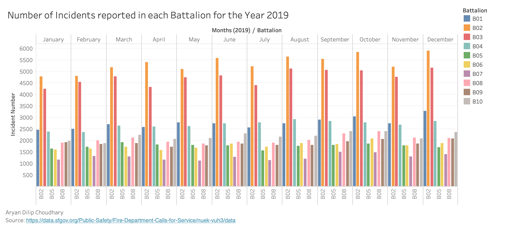
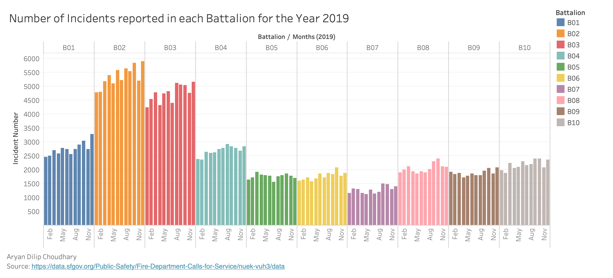

Prototype 1 - Number of Incidents reported in Each Batallion for the Year 2019
Aryan Dilip Choudhary
Wrangling specific to prototype
For this tableau prototype the data is filtered by "Batallion" not "B99", "Year" is 2019. The data is grouped by Batallion, Watch Date (Months). The data is aggregated by Incident Number as sum.
Filtered By: Batallion not "B99", Year 2019
Grouping By: Batallion, Watch Date (Months), and Call Type Group (Interactivity)
Aggregated By: Incident Number (sum)
Tableau Prototype [Beta Release]

Tableau Prototypes [Final Release]
 D3 version
Number of Incidents reported in each Battalion for the Year 2019
Source: https://data.sfgov.org/Public-Safety/Fire-Department-Calls-for-Service/nuek-vuh3/data
Created by - Aryan Choudhary
Interactivity for the Visualization
Following interactivities has been implemented for the visualization:
- Hovering over a bar highlights all the bars related to that particular Batallion and fades all of the bars belonging to the other Batallions.
- A button is provided at the top for grouping the data based on battalion. When that button is pressed, another button is provided for grouping based on month.
- Provided on demand data display for each bar. When a user hovers on a bar then a tool tip pops up with details regarding, Battalion, Month, Number of incidents and year of that data element.
Peer Review Feedback
- Use a non-paired color scheme. The paired color scheme gives the impression that some battalions are related, which is not the case. Battalion labels on x axis are sometimes missing
- Since there is already color encoding, it seems unnecessary to have the bottom axis as well, data ink can be reduced there. The number of incidents also can be reliant on population for the neighborhood that battalion serves, so maybe a ratio would be better for lie factor rather than raw count. Otherwise, this seems like a strong visualization, and the planned interactivity seems very useful for interpretation.
- The graph is easy to understand and very dense in a not-overwhelming way. Maybe there is too much non-data related ink in the graph e.g B02 extra zeros and Month label.
- color encoding very clear for readers, high data density
- This one is very interesting however discerning the colors was a bit hard for me. Also seeing all the battalions names could help.
- There is a lot of colors, it might be helpful to add a very small margin in between months, I think the planned interactivity will be really cool and can't wait to see.
- The bar chart looks good and easy to read. the x axis batallion names are too squished together. Overall with the planeed interactivity it will be really good.
- Nice chart with good presentation
- Excellent Job!
Data Encoding and Interpretation
Avg. number of Incidents vs Months. Colour shows different Battalion. The length of bar shows the incident number count. The x axis(vertical axis) is represented by Month and y axis is represented by Incident Numbers.
Conclusion based on the prototype
For year 2019, "B02" is the most active Batallion. December 2019 is the month with the highest number of incidents for the Batallion "B02". The second most active Batallion is "B03". The prototype shows an increase in number of incidents from January to December except for the month of July and November.
How this visualization supports the theme?
Visualization helps in analysing the most active/busiest batallion for the year 2019.
Inspiration